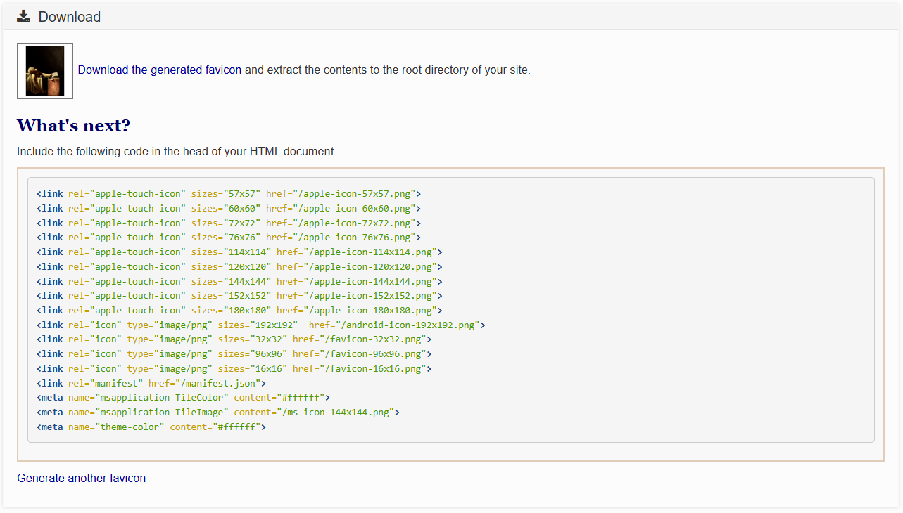

A favicon is a small icon that represents your website, typically displayed in the browser tab or bookmark list.
You can change the favicon by modifying the href attribute of
the link tag.
In this example, the favicon is set to an image named
deathconciousness.jpg.
Visit the this website to generate your own favicon. You can upload an image, and it will provide you with the necessary HTML code to include in your website.
After loading the image, you will receive a link to download the favicon.
Save it in your project directory and link it in your HTML file using the
following instruction.

Note: Make sure to replace the href value
with the path to your favicon file.